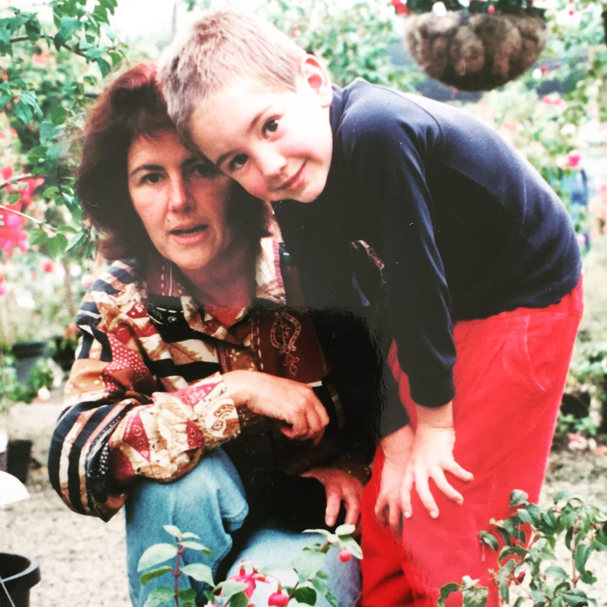

Gardening
A love of gardening was influenced by my mother at an early age while growing up in the Adelaide Hills, where I always had my own vegetable garden. This has developed into a passion for Australian natives and organically grown fruit and vegetables - contributing to sustainability.
Return to blog